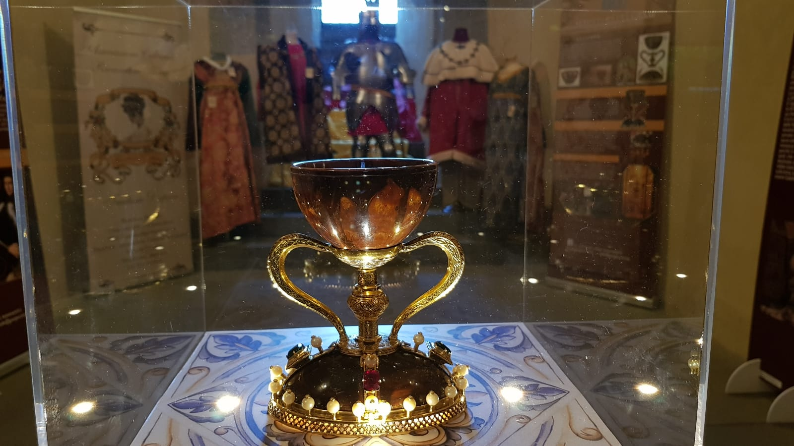

Famosissima opera artigianale, la sua particolarità non è data dalla sua creazione ma tanto più dal suo utilizzo, si pensa sia il calice dell'ultima cena. La leggenda narra della scomparsa del pezzo reale, ma in realtà si trova qui (non fidatevi della scritta made in china sul coperchio).
 Se vuoi tornare alla home clicca qui